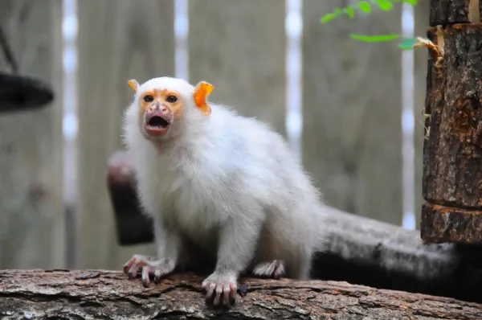
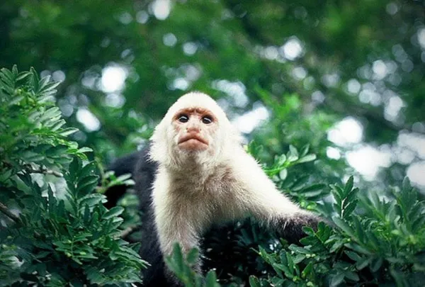
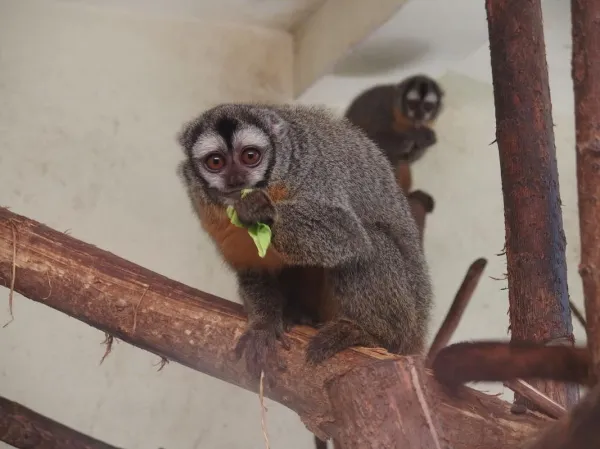
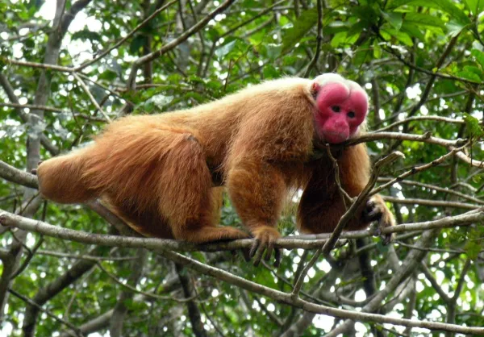
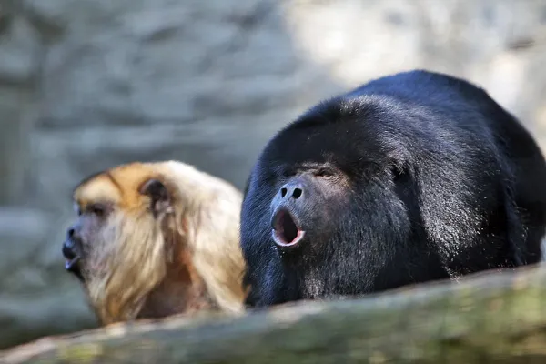
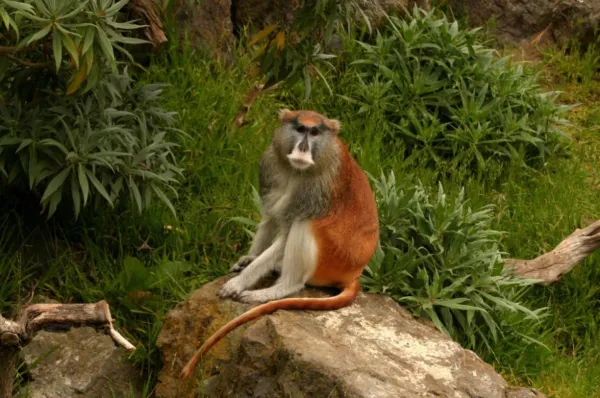

Descubra a classificação científica dos macacos em mais detalhes, onde se distinguem dois tipos diferentes e um total de seis famílias de macacos nesse artigo do PeritoAnimal. Os diferentes tipos de macacos, nomes de macacos e raças de macacos:
Os saguis e micos

Os saguis ou Callitrichidae pelo seu nome científico, são primatas que vivem na América do Sul e América Central. Nesta família existe um total de 7 gêneros diferentes:
- O sagui-anão é um primata que vive na Amazônia e pode chegar a medir 39 cm na idade adulta, ele é um dos menores saguis existentes.
- O sagui-pigmeu ou sagui-leãozinho vive na Amazônia e é caracterizado pelo seu diminuto tamanho, sendo o menor macaco designado como do novo mundo.
- O mico-de-goeldi é um habitante da Amazônia também caracterizado pela sua longa e brilhante pelagem preta, exceto no ventre, onde não tem nenhum pelo. Eles têm uma juba que pode chegar a 3 cm de comprimento.
- O gênero Mico compreende um total de 14 espécies de saguis que vivem na floresta amazônica e ao norte do Chaco paraguaio. Entre as espécies destacadas estão o sagui-prateado, o sagui-de-rabo-preto, o sagui-de-santarém e o sagui-dourado.
- Os micos-leões são macacos pequenos que devem o seu nome a pelagem que têm, as espécies são facilmente distinguíveis pelas suas cores. Eles são exclusivos da floresta tropical brasileira, onde se encontram o mico-leão-dourado, mico-leão-de-cara-dourada, mico-leão-preto e o mico-leão-de-cara-preta.
- Os micos, como tais, são característicos por possuir caninos pequenos e incisivos longos. Esse gênero de primatas habita a América Central e do Sul, onde existe um total de 15 espécies.
O macaco-prego

Na família dos Cebídeos, pelo seu nome científico, encontramos um total de 17 espécies distribuídas em 3 gêneros diferentes:
- Os macacos-capuchinho devem o seu nome ao capuz de pelos brancos em volta do seu rosto, pode medir 45 cm e compreendem 4 espécies, o Cebus capucinus (macaco-prego-de-cara-branca), Cebus olivaceu (caiarara), o Cebus albifrons e o Cebus kaapori.
- Os sapajus integram um total de 8 espécies e são endêmicos das regiões quentes da América do Sul. Eles são mais corpulentos que os capuchinhos e são caracterizados por apresentar tufos na cabeça. Os capuchinhos e os sapajus pertencem à família Cebidae, porém, à subfamília Cebinae.
- Os saimiris, também chamados macacos-de-cheiro ou macacos-esquilo, vivem em florestas da América do Sul e Central, eles podem ser encontrados na Amazônia e, ainda, no Panamá e em Costa Rica, dependendo da espécie. Constituem um total de 5 espécies, pertencem à família Cebidae, porém, à subfamília Saimiriinae.
Macaco da noite

O macaco-da-noite é o único gênero de primatas da família Aotidae e pode ser encontrado nas florestas tropicais da América do Sul e América Central. Ele pode medir até 37 cm, o mesmo tamanho que atinge a sua cauda. Possui um manto castanho ou cinza característico, que lhe cobre as orelhas.
Como o seu nome indica, é um animal de hábitos noturnos, dotado de olhos muito grandes, como muitos dos animais que têm atividade noturna, e uma esclera alaranjada. É um gênero que possui um total de 11 espécies.
Uacaris ou cacajaos

Os pitecidos, pelo seu nome científico, são uma família de primatas que vivem nas selvas tropicais da América do Sul, geralmente, arbóreas. Nesta família existem 4 gêneros e um total de 54 espécies:
- Os cacajaos ou também chamados uacaris, são conhecidas um total de 4 espécies. Caracterizados por ter uma cauda bem mais curta que o tamanho do seu corpo, em muitos casos, menos da metade do seu tamanho.
- Os cuxiús são primatas que vivem na América do Sul, devem seu nome a uma barba notória que cobre a sua mandíbula, pescoço e peito. Eles têm uma cauda grossa que serve apenas para equilibrá-los. Neste gênero, 5 espécies diferentes são conhecidas.
- Os saimiris, também chamados macacos-de-cheiro ou macacos-esquilo, vivem em florestas da América do Sul e Central, eles podem ser encontrados na Amazônia e, ainda, no Panamá e em Costa Rica, dependendo da espécie. Constituem um total de 5 espécies, pertencem à família Cebidae, porém, à subfamília Saimiriinae.
- Os parauacus são primatas que vivem nas selvas do Equador, onde se distingue um total de 16 espécies de macacos. Tanto os uacaris como os cuxiús e os parauacus pertencem à subfamília Pitheciinae, sempre na distinta família Pitheciidae.
- Os callicebus são um gênero de primatas que vivem no Peru, Brasil, Colômbia, Paraguai e Bolívia. Podem medir até 46 cm e possuem uma cauda igual ou 10 cm mais longa. O gênero inclui um total de 30 espécies, pertencentes à subfamília Callicebinae e à família Pitheciidae.
Os bugios

Os macacos Atélidos pertencem a uma família de primatas que são encontrados em toda a América Central e do Sul, incluindo a parte sul do México. Nesta família, 5 gêneros e um total de 27 espécies estão incluídos:
- Os bugios são animais que vivem em áreas tropicais e podem ser facilmente encontrados na Argentina e no sul do México. Devem o seu nome ao som característico que emitem para se comunicar, muito útil quando estão em perigo. Pertencem à subfamília Alouattinae, sempre dentro da família Atelidae. De rosto curto e nariz arrebitado, o bugio pode atingir até 92 cm de comprimento e possui uma cauda de medidas semelhantes. Podemos distinguir um total de 13 espécies.
- Os macacos-aranha devem o seu nome à ausência de um polegar opositor em seus membros superiores e inferiores. Eles são encontrados do México para a América do Sul e podem medir até 90 cm, com uma cauda de tamanho similar. É um gênero que possui um total de 7 espécies.
- Os muriquis podem ser encontrados no Brasil, na tonalidade cinza ou marrom, contrastando completamente com o preto do macaco-aranha comum. É o maior gênero platyrrinos, que possui 2 espécies.
- Os lagothrix (ou macaco-barrigudo) são primatas nas selvas e florestas da América do Sul. Eles podem chegar a 49 cm e a sua característica distintiva é a presença de uma pelagem lanosa nas cores, marrom a castanho. Este gênero possui 4 espécies de macacos.
- O oreonax flavicauda é a única espécie do gênero Oreonax, endêmica do Peru. A sua situação atual não é promissora, pois, é classificada como criticamente ameaçada, um passo antes que a espécie seja considerada extinta na natureza, e dois estágios, antes de ser extintos completamente. Eles podem medir até 54 cm, com uma cauda um pouco maior que o seu corpo. Tanto o oreonax flavicauda, o macaco-barrigudo, o muriqui e o macaco-aranha pertencem à subfamília Atelinae e à família Atelidae.
Os macacos do velho mundo

Os Cercopitecidos pelo seu nome científico, também conhecido como os macacos do velho mundo, pertencem à parvordem Catarrhini e à superfamília Cercopithecoidea. É uma família constituída por um total de 21 gêneros e 139 espécies de macacos. Esses animais vivem na África e na Ásia, em climas variados e em habitats igualmente mutáveis. Entre os gêneros mais importantes, estão:
- O erythrocebus é uma espécie de primata da África Oriental, eles vivem em savanas e áreas semidesérticas. Podem medir até 85 cm e ter uma cauda 10 cm mais curta. É um dos primatas mais rápidos, pode atingir 55 km/h.
- Os macaca são encontrados na África, China, Gibraltar e Japão. Estes macacos têm uma pequena cauda desenvolvida ou nenhuma causa. Um total de 22 espécies aparece neste gênero.
- Os babuínos são animais terrestres que raramente escalam árvores, eles preferem habitats abertos. Estes quadrúpedes são os maiores macacos do velho mundo, possuem uma cabeça longa e magra e uma mandíbula com caninos poderosos. Neste gênero, 5 espécies diferentes são distinguidas.
- O macaco-narigudo é um primata endêmico da ilha de Bormeo, característico por ter um nariz comprido ao qual deve seu nome. Eles são animais que estão em perigo de extinção, sabemos que hoje existem apenas 7000 exemplares.